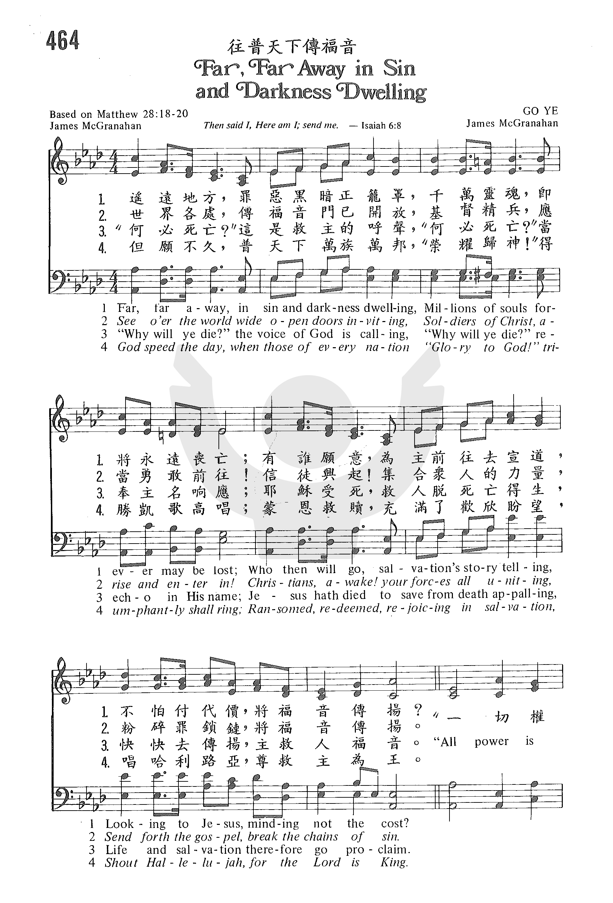
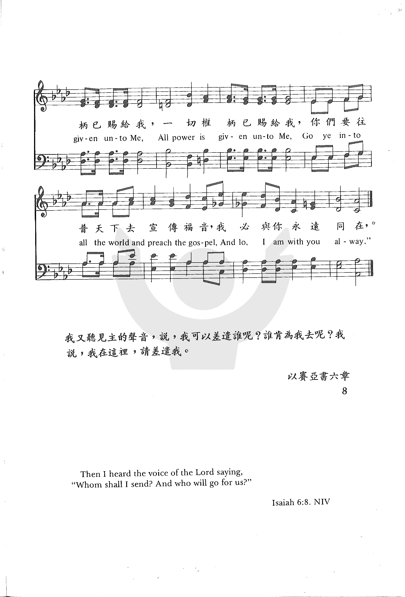

0979
Far Far Away in Sin And Darkness Dwelling
_James
McGranahan 往普天下传福音
|
|
|
Far, far away, in heathen darkness dwelling,
Millions of souls forever may be lost;
Who, who will go, salvation’s story telling,
Looking to Jesus, counting not the cost? “All pow’r is given unto me,
All pow’r is given unto me,
Go ye into all the world and preach the gospel,
And lo, I am with you alway.”
2
See o’er the world, wide open doors inviting:
Soldiers of Christ, arise and enter in!
Christians, awake! your forces all uniting,
Send forth the Gospel, break the chains of sin.
3
“Why will ye die?” the voice of God is calling,
“Why will ye die?” re-echo in His name:
Jesus hath died to save from death appalling,
Life and salvation therefore go proclaim.
https://www.hymnal.net/en/hymn/h/917 |
遙遠地方，黑暗籠罩之外邦，
千萬靈魂將要永遠淪亡。
誰願前往將得救福音傳揚，
仰望耶穌，不論代價高昂。
看全世界，傳福音門仍大開，
基督精兵，快進入莫等待，
信徒醒起，集中你一切力量，
解脫罪鏈，快把福音傳揚。
「為何死亡？」這是真神的呼聲，
「為何死亡？」奉主聖名響應，
耶穌捨命要救人脫離死亡，
故要趕快傳得救恩之方。
那日快來，全世界宗主聖徒，
「榮耀歸神！」得勝凱歌高唱，
蒙救贖者在救恩中要歡樂，
高唱「哈利路亞主已為王。」
副歌：
所有權柄都賜給我，
所有權柄都賜給我，
你們要往普天下去傳揚福音，
我必常與你們同在。
https://www.jgospel.net/c/2/178383/279/3986/%E6%95%99%E6%9C%83%E8%81%96%E8%A9%A9%E9%9B%86-%E5%BE%80%E6%99%AE%E5%A4%A9%E4%B8%8B%E5%82%B3%E7%A6%8F%E9%9F%B3.aspx |
|
https://www.zanmeishige.com/tab/26039.html?songbook=1&index=464

 |
|
|
|
 赞美诗333:
往普天下传福音
赞美诗333:
往普天下传福音
-
- Far, far away, in heathen darkness dwelling
0979
Far Far Away in Sin And Darkness Dwelling 往普天下传福音
|
Short Name: |
James McGranahan |
|
Full Name: |
McGranahan, James, 1840-1907 |
|
Birth Year: |
1840 |
|
Death Year: |
1907 |
James McGranahan USA
1840-1907.

Born at West Fallowfield,
PA, uncle of Hugh McGranahan, and son of a farmer, he farmed during boyhood.
Due to his love of music his father let him attend singing school, where he
learned to play the bass viol. At age 19 he organized his first singing
class and soon became a popular teacher in his area of the state. He became
a noted musician and hymns composer. His father was reluctant to let him
pursue this career, but he soon made enough money doing it that he was able
to hire a replacement farmhand to help his father while he studied music.
His father, a wise man, soon realized how his son was being used by God to
win souls through his music. He entered the Normal Music School at Genesco,
NY, under William B Bradbury in 1861-62. He met Miss Addie Vickery there.
They married in 1863, and were very close to each other their whole
marriage, but had no children. She was also a musician and hymnwriter in her
own right. For a time he held a postmaster’s job in Rome, PA. In 1875 he
worked for three years as a teacher and director at Dr. Root’s Normal Music
Institute. He because well-known and successful as a result, and his work
attracted much attention. He had a rare tenor voice, and was told he should
train for the operatic stage. It was a dazzling prospect, but his friend,
Philip Bliss, who had given his wondrous voice to the service of song for
Christ for more than a decade, urged him to do the same. Preparing to go on
a Christmas vacation with his wife, Bliss wrote McGranahan a letter about
it, which McGranahan discussed with his friend Major Whittle. Those two met
in person for the first time at Ashtubula, OH, both trying to retrieve the
bodies of the Bliss’s, who died in a bridge-failed train wreck. Whittle
thought upon meeting McGranahan, that here is the man Bliss has chosen to
replace him in evangelism. The men returned to Chicago together and prayed
about the matter. McGranahan gave up his post office job and the world
gained a sweet gospel singer/composer as a result. McGranahan and his wife,
and Major Whittle worked together for 11 years evangelizing in the U.S.,
Great Britain, and Ireland. They made two visits to the United Kingdom, in
1880 and 1883, the latter associated with Dwight Moody and Ira Sankey
evangelistic work. McGranahan pioneered use of the male choir in gospel
song. While holding meetings in Worcester, MA, he found himself with a choir
of only male voices. Resourcefully, he quickly adapted the music to those
voices and continued with the meetings. The music was powerful and started
what is known as male choir and quartet music. Music he published included:
“The choice”, “Harvest of song”, “Gospel Choir”,, “Gospel hymns #3,#4, #5,
#6” (with Sankey and Stebbins), “Songs of the gospel”, and “Male chorus
book”. The latter three were issued in England. In 1887 McGranahan’s health
compelled him to give up active work in evangelism. He then built a
beautiful home, Maplehurst, among friends at Kinsman, OH, and settled down
to the composition of music, which would become an extension of his
evangelistic work. Though his health limited his hours, of productivity,
some of his best hymns were written during these days. McGranahan was a most
lovable, gentle, modest, unassuming, gentleman, and a refined and cultured
Christian. He loved good fellowship, and often treated guests to the most
delightful social feast. He died of diabetes at Kinsman, OH, and went home
to be with his Savior.
John Perry
Tune Information
|
Title: |
GO
YE |
|
Composer: |
James McGranahan (1886) |
|
Meter: |
11.10.11.10 with refrain |
|
Incipit: |
31653 56713 22212 |
|
Key: |
A♭
Major/A Major |
|
Copyright: |
Public Domain |
This article by Gladys Doonan, "To Reap for the Master" in "Challenge", December
28, 1986 tells the amazing story of how McGranahan gave his life for the Lord's
service:
Even the festivities of the Christmas season that December of 1876 couldn’t
drive them from his mind — those notes his friend Philip had written to him just
a few days before the holiday. He read them over and over again and almost
decided to yield to the urging of their message—almost, but not quite. His
dreams of personal ambition were still too precious. How could he give them up?
James McGranahan was a talented and cultured American musician who lived from
1840 to 1907. He was gifted with a rare tenor voice and studied for years with
eminent teachers who urged him to train for a career in opera. Of course, this
advice opened up to his imagination dazzling prospects of fame and fortune. And
he was assured time and time again it was all within his grasp.
James McGranahan was a Christian, and he had a Christian friend Philip P. Bliss
who was concerned about him. His friend was also a capable musician who had gone
through many of the same experiences in his younger days as a singer. However,
he had been sensitive to the claims of the Lord on his life and had yielded his
talents to God for full-time Christian service.
Though only two years older than McGranahan, Philip Bliss, at 38, had a good
dozen years of Christian work behind him. He was then serving as a gospel
soloist with the great evangelist Major D. W. Whittle. How he thrilled to the
response of the great crowds who gathered for their campaigns and to the working
of the Holy Spirit through his music! He longed for his friend James to know
that thrill as well!
Philip Bliss and his wife were preparing for a trip home to Pennsylvania for
Christmas. There was much to be done, but in the midst of all the bustle and
hurry Bliss felt strangely compelled to take time out to write McGranahan a
letter. He kept thinking of his 36-year-old friend, who was still studying
music, still preparing for—what? Would it be opera or would it be the Lord’s
work?
Philip Bliss prayed as he wrote that he would know the right words to put down.
He knew the Lord was dealing with James and was eager for his friend to make the
right decision.
Finally the letter was done. Bliss, needing encouragement and approval for what
he had said, read it to Major Whittle. In the letter he compared McGranahan’s
long course of musical training to a man whetting his scythe for the harvest.
The climax came as he strongly urged, Stop whetting the scythe and strike into
the grain to reap for the Master!
The letter was sent on its way and quickly reached its destination. Those words
touched James McGranahan as no others had before. He could think of nothing
else. Strike into the grain to reap for the Master…to reap for the Master…to
reap for the Master! Day and night those words were before him.
One week later, December 29, 1876, the man who had penned the words was dead.
The train returning the Blisses from Pennsylvania to Chicago where Philip was
scheduled to sing at Moody Tabernacle broke through a railroad bridge at
Ashtabula, Ohio. It plunged into a 60-foot chasm and caught fire. Among the 100
who perished in the disaster were the 38-year-old gospel singer and his wife.
When James McGranahan received news of the tragedy he rushed immediately to the
scene of the accident. And it was there, for the first time, that he met Major
Whittle.
The evangelist later recorded his thoughts on the occasion: Here before me
stands the man that Mr. Bliss has chosen to be his successor.
The two men made the return trip to Chicago together, and as they rode they
talked. Before they reached the city James McGranahan decided to yield his life,
his talents, his all to the service of his Savior. He would strike into the
grain to reap for the Master.
The operatic world lost a star that day, but the Christian world gained one of
its sweetest gospel singers. James McGranahan was greatly used in evangelistic
campaigns throughout America, in Great Britain and in Ireland.
------------
There is an additional 4th stanza:
God speed the day, when those of every nation
"Glory to God" triumphantly shall sing.
Ransomed, redeemed, rejoicing in salvation,
Shout "Hallelujah, for the Lord is king."
https://www.hymnal.net/en/hymn/h/917
From Wikipedia, the free encyclopedia
Jump to navigationJump
to search
James McGranahan was
a nineteenth-century American musician and composer, most known for
his various hymns.
He was born 4 July 1840, in West
Fallowfield or Adamsville,
Pennsylvania, and died 9 July 1907 at his home in Kinsman,
Ohio.[1]
He composed over 25 hymns. For
example, in one work he is listed as the composer of three notable
songs: "He Will Hide Me" by Mary
Elizabeth Servoss, "Revive Thy Work, O Lord" by Albert
Midlane, and "Come" by a "Mrs. James Gibson Johnson";[2] and
he composed the music for at least 39 of the 79 hymns in a work
co-authored with Ira
D. Sankey.[3] McGranahan
composed most of the tunes for the lyrics of Major Daniel
Webster Whittle, including EL NATHAN, the tune associated with
Whittle's "I Know Whom I Have Believèd" (written 1883).
The music of his hymn "My Redeemer,"
written for lyrics by P.
P. Bliss,[4] is
used as the accompaniment for the Latter-day
Saints hymn "O
My Father."[5]
In Hawaii, McGranahan is noted for
writing the music to the hymn "I Left It All With Jesus." The melody
was given new lyrics, written sometime prior to 1886 by Lorenzo
Lyons, an early missionary to Hawaii, and given a new title,
"Hawai'i Aloha." Lyons was known as "Makua Laiana" or simply "Laiana."
By the end of the 20th century "Hawai'i Aloha" had become one of
Hawaii's best known and best loved songs. It is often sung at the
close of public political, spiritual, educational and sporting
events.
References[edit]
-
^ The
New York Times, July 10, 1907 available
online
-
^ Brown,
Theron and Butterworth, Hezekiah, The
Story of the Hymns and Tunes. New York: American
Tract Society, 1906.at
Project Gutenberg
-
^ Ira
D. Sankey and James McGranahan, The
Christian Choir. London: Morgan & Scott, [c.1900]
-
^ The
tune is often known by the first line in Bliss' lyrics,
"I will sing of my Redeemer." See McCann, Forrest M.
(1997). Hymns and History: An Annotated
Survey of Sources. Abilene, TX: ACU Press. Pp. 154,
359-360. ISBN 0-89112-058-0
-
^ See
also Calon
Lân.
External links[edit]
https://en.wikipedia.org/wiki/James_McGranahan
1
我們看見你榮耀計畫，要在地上建造你家；
不禁禱告：『主，得著我們，建造我們─照你辦法！』
你的回答迅速又肯定：『為建我家，你當知道：
你魂生命必須要了了，你必須在壇上仆倒。』2
乍聽之下，審判太嚴厲，難免令人不寒而慄；
但是我們天天親近你，任何代價就可不計。
為你的家我們願受死，好讓你作我們一切；
你是我們完全的供應，你是我們建造憑藉。
3
為你計畫我們獻自己，雖不盡知其中深意；
生命一切，如今全獻上，作為活祭，倒出、失去。
在你壇上，主，燒燬我們，直到成灰，完全徹底，
讓你馨香，裊裊不絕的，在讚美中永遠歸你。
轉載:李佳福之《倪柝聲與中國「地方教會」運動（1903-1972），碩士論文》
轉載:「移民福音」運動的典範:弋陽移民的經過—4
時間漸漸逼近，時局也一天過一天的緊張起來〔筆者注：1949年10月底共產黨開始在徐州與國民政府對峙，直逼長江〕，環境在催促我們快走。農曆11月16日是動身的一天。22日下午二時許，安達弋陽。下車後，即步行至基信第一農場。不到二個月的光景，我們已買成了四百多畝。並且價目也剛好是合乎我們的力量，我們就在一個不十分寬敞的山壟裡建造茅舍。一九四九年的正月初五日，搬到新舍裡。於是這個荒山野坳中，住下了神的兒女！」。
從馮氏的見證中透露了幾項訊息：
第一，1948年前往江西弋陽的移民，是由浙江蕭一帶的信徒（以馮和仁為首），帶領著二十一個家庭，共91人，集體遷徙過去的。此外，就地理位置來說，也配合了倪氏所主張從沿海向內地傳福音的策略。
第二，這批參與移民的信徒采志願制，並且要求移民者交出財產，由教會全權處置、變賣。將所得的金錢，購買了四百多畝的集體農場，讓信徒們一面開墾，一面傳福音，過著「凡物公用」的簡樸生活。誠如李文夫於
1950 年 6 月 25
日所寫的見證：「現在弟兄已蒙農場眾弟兄姊妹的愛心，將我接到集體農場裡面居住。工作也安排好了。我擔任庫管組事，內人擔任縫衣工作。曰緒（我的孩子）學習種田。在楊樹橋教會的事奉配搭，弟配在福音組和招待組裡。對於弟參加集體生活的事，甚願擺在年長兄姊面前一同來生活。」（09）
而馮和仁於1950年4月3日所寫的見證也說：「哦！讚美主，祂使我們在這大家庭內來操練彼此相愛，彼此服事的功課。願神給我們徹底除去自私的心，進到凡物公用、不分你我的境地。為了解決衣著的不同起見，我們傳了一次徹底交出來的資訊。讚美主！弟兄姊妹們都甘心樂意的把多餘的衣服布疋都交了出來。有的只剩了隨身所著的。」（10）
第三，第二波的移民潮，是李常受在杭州召開十天的特別聚會（1948年10月25日到11月
3日），向他們宣揚「移民福音」運動，鼓勵了馮氏等人往普天下『去』——移民——傳福音給萬民聽」（《聖經·馬可福音》第十六章15節）因此掀起第三波的弋陽移民潮。
發表於 2014/08/05 09:54 PM
http://blog.sina.com.tw/dingo50/article.php?entryid=634446
{kind=link}